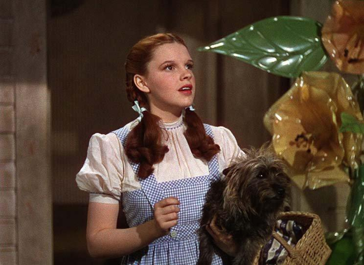

Главная героиня
Дороти
Дороти — добрая, искренняя и смелая девочка, которая оказывается в волшебной стране после урагана. Несмотря на неожиданную ситуацию, она не теряет человечности, заботится о друзьях и сохраняет желание вернуться домой.
Её образ символизирует чистоту, верность, надежду и внутреннюю стойкость. Именно через неё раскрывается мысль о том, что дом — это не просто место, а источник любви, безопасности и настоящего счастья.